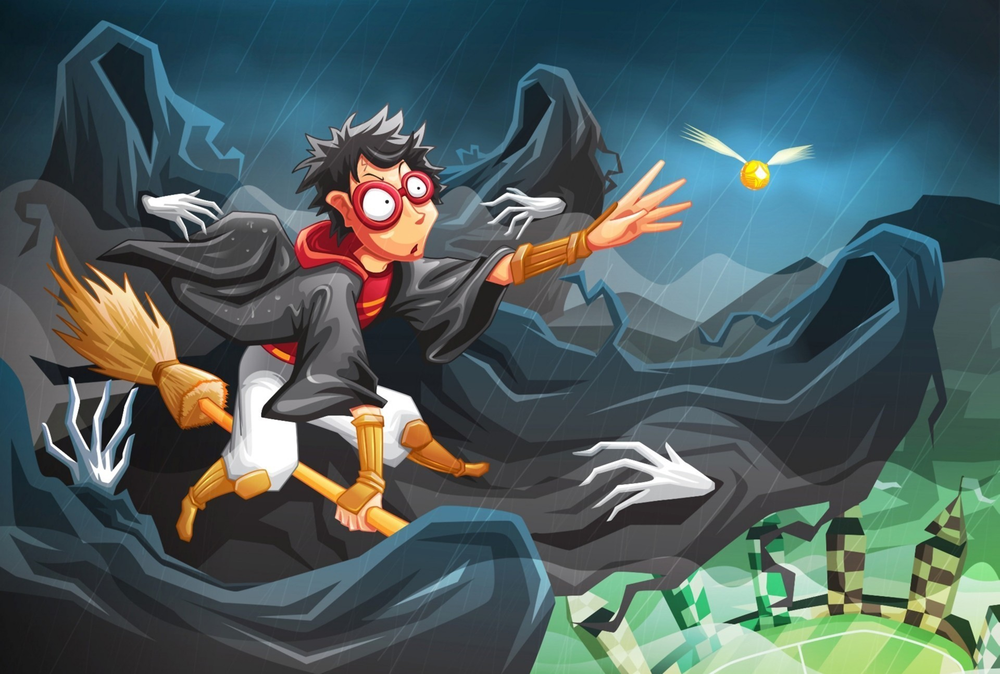
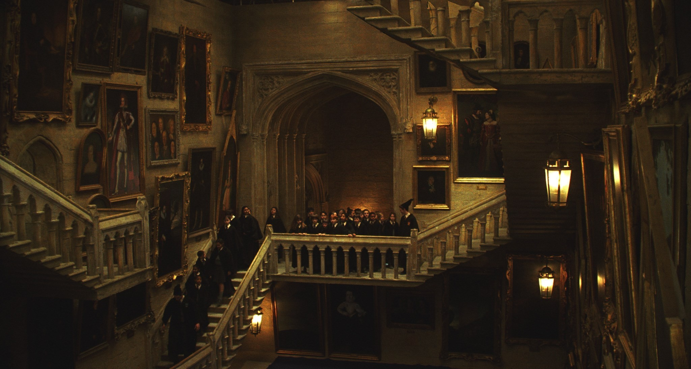
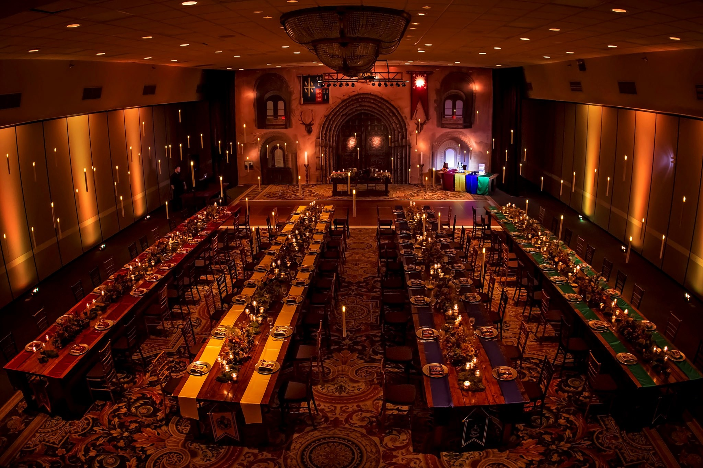
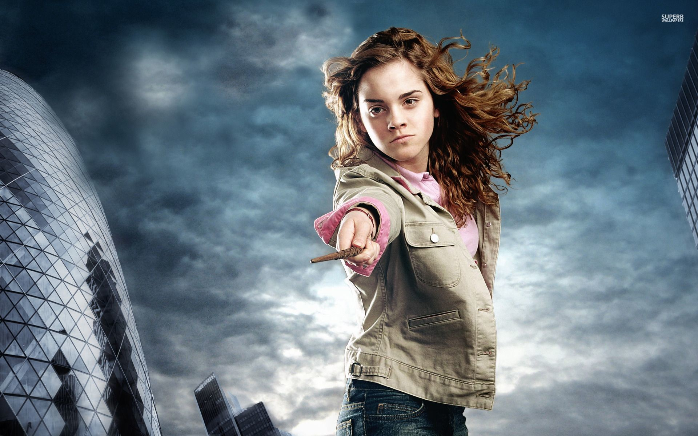
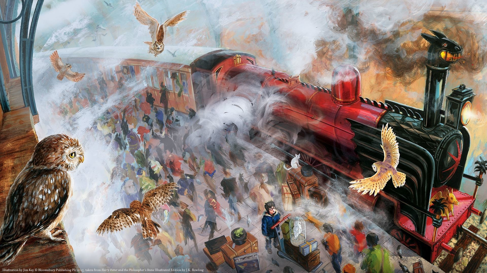
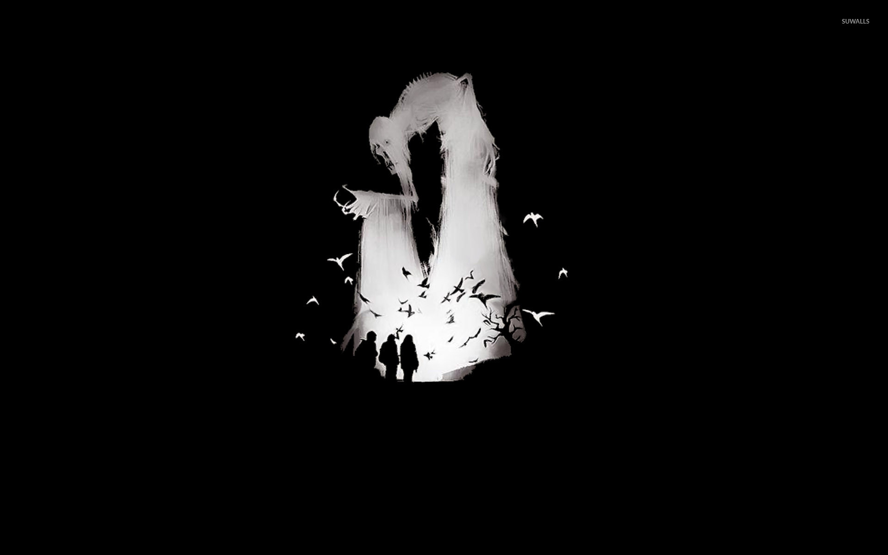
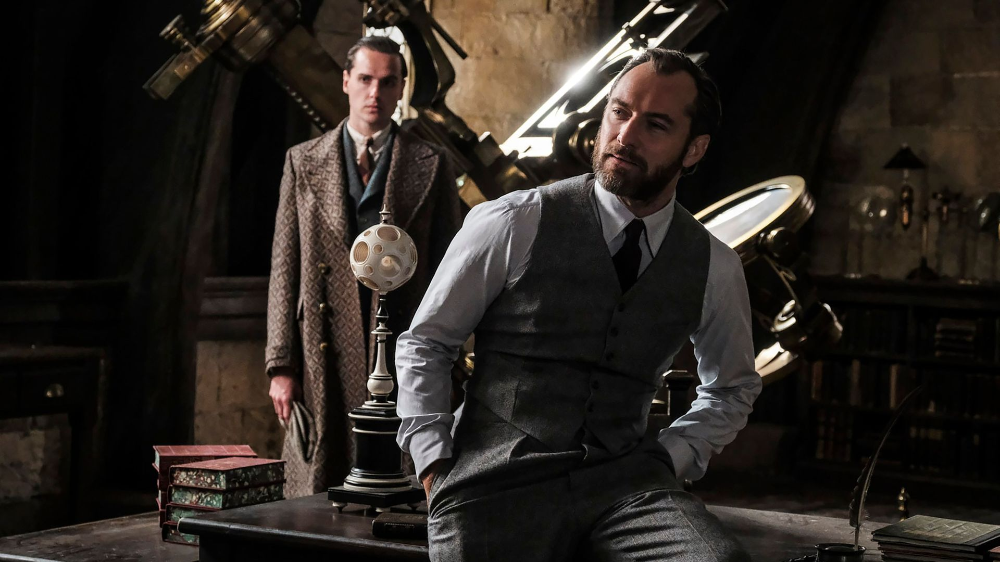
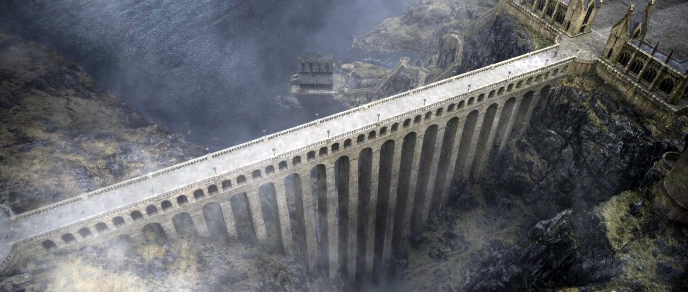
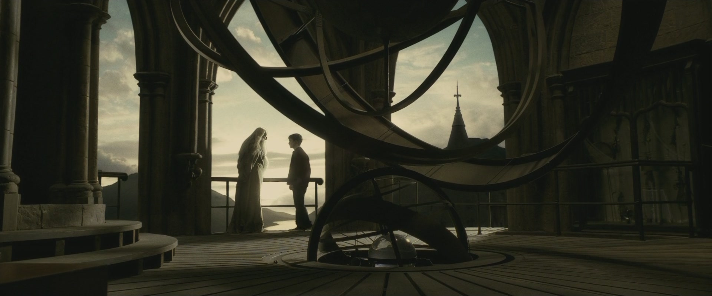

HOGWARTS SCHOOL OF WITCHCRAFT & WIZARDRY









Quidditch
Quidditch has been played in the wizarding world for almost 1,000 years. The Quidditch World Cup has been played every four years, more or less, since 1473.
Dobby, a free elf.
and one of Harry Potter's most loyal friends.
The moving stairs
It was Rowena Ravenclaw who came up with the idea of using moving stairs.
The Great Hall
is the main gathering area in the school, which is located off the Entrance Hall.
Hermione Jean Granger
From bookish Muggle-born to one of Gryffindor's bravest.
The Kings Cross Station
King's Cross, which is one of London's main railway stations, has a very personal significance for me, because my parents met on a train to Scotland which departed from King's Cross station.
- J.K. Rowling
The Deathly Hallows
Three legendary objects owned and likely created by the Peverell brothers. Together, they are said to make one 'master of death'.
Albus Percivel Wulfric Brian Dumbledore
There are all kinds of courage. It takes a great deal of bravery to stand up to our enemies, but a great deal more to stand up to our friends.
- Albus Dumbledore
The viaduct
a bridge at Hogwarts Castle.
The Astronomy Tower
"If I tell you to leave me and save yourself, you will do as I tell you?"
-Albus to Harry